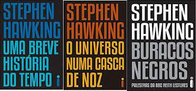
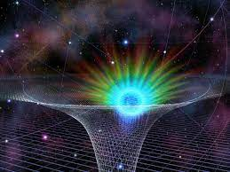

-
Durante seus estudos em Cambridge, em 1963, aos 21 anos, foi diagnosticado com um tipo de Esclerose Lateral Amiotrófica (ELA), doença neurodegenerativa rara que paralisa os músculos do corpo. Mesmo assim, ele concluiu seu doutorado, tornou-se professor de Matemática, ocupando a cátedra que antes havia sido de cientistas como Charles Babbage, Isaac Newton e Paul Dirac, e dirigiu o departamento de Matemática Aplicada e Física Teórica da mesma universidade.
-
Fundamental para o desenvolvimento científico, Hawking proporcionou não apenas uma quase "revolução" na forma de fazer ciência, como desembocou em uma disseminação da astronomia e cosmologia mais acessível à população leiga com a publicação de livros como "O Universo numa Casca de Noz" e "Buracos Negros".
-
Entre uma de suas mais brilhantes pesquisas estão as esquações que determinam a entropia (digamos que seria equivalente ao grau de desordem no universo), além da radiação presente em buracos negros, tal como a ideia de que tal singularidade não poderia simplesmente absorver tudo ou toda a energia, liberanto, assim, uma outra forma de energia.
-
 